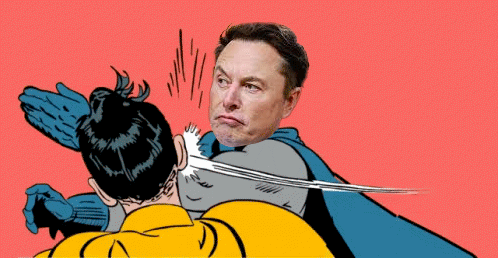

SLAP
-meme token-
Rumor has it that the new token SLAP (SpaceX Likeable Asset & Profit) is a token that makes Elon Musk give a 'slap' every time he expresses an opinion about cryptocurrency. It's a token that not only ensures profit but also adds humor to the crypto world! 🚀🖐️ #SLAP #ElonMuskSlap
BUY it →
SLAP this tokenWelcome to our world, where we believe in change, innovation, and continuous growth. We are a team of enthusiasts who have come together to create something extraordinary. Our mission is to inspire, transform, and leave a mark on the industry. We believe that every idea has the potential to change the world, and that's why we put our hearts and creativity into everything we do. Here, you'll find not just products and services but also a sense of community striving for achievements. We aim to provide you with the best, offering innovative solutions and support at every step of your journey. Join us on our journey where each stage is a discovery, each idea is an opportunity, and the shared path is the key to success. Thank you for being with us and fu*king sLAP this!
"Tokenomics" is a pivotal aspect of our project designed for stability, transparency, and success. Our tokenomics model is crafted considering economic factors and aimed at ensuring the resilience of our ecosystem.
The core components of our tokenomics consider not only the token's functionality but also its role within our project and community. We've built an economic system that encourages participation, offers advantages to our participants.
We strive for maximum transparency and openness in all aspects of our tokenomics so that each participant in our project can understand its mechanisms and contribute to its development alongside us.